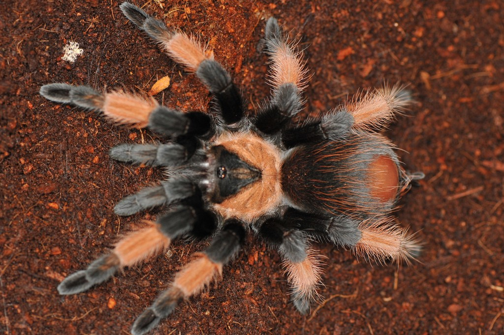
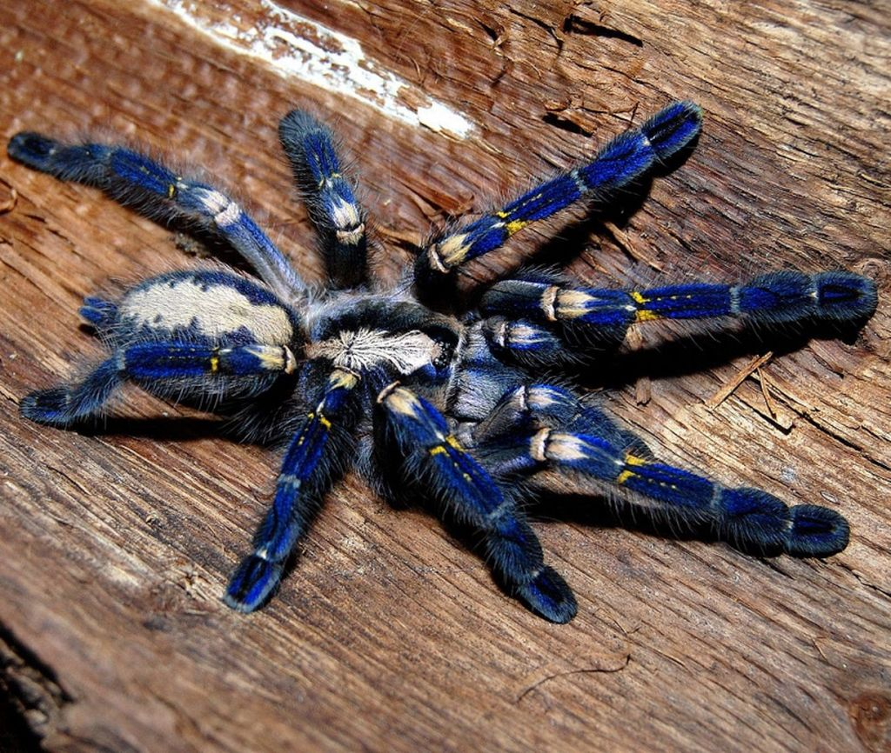
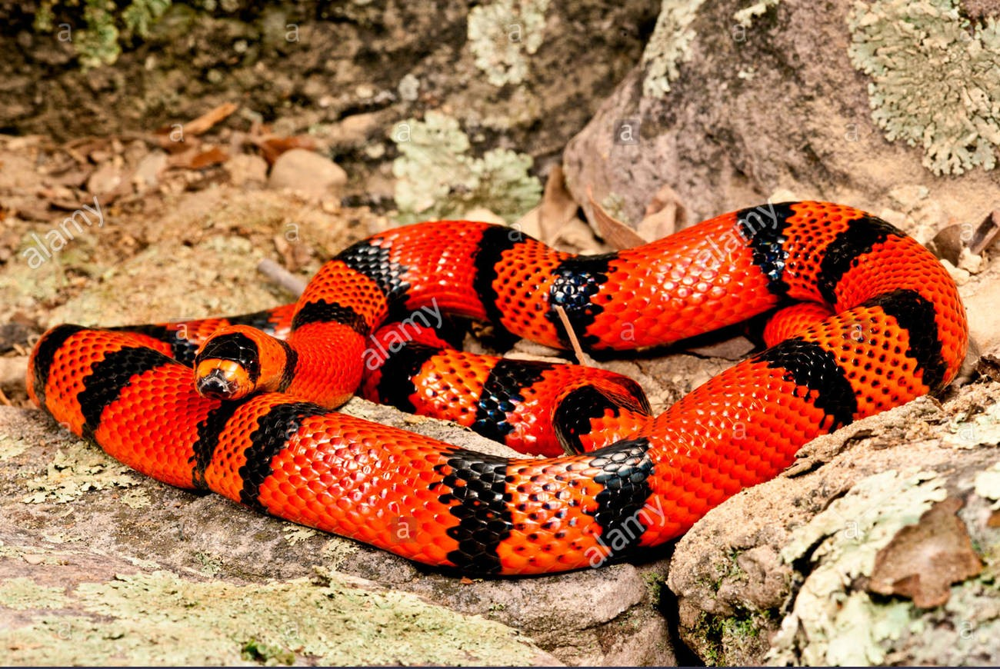

The Mexican redleg or red-legged tarantula (Brachypelma emilia
or Euathlus emilia) is a species of terrestrial tarantula closely
related to the famous mexican redknee tarantula.
Like the redknee it is a docile tarantula and popular in
the pet trade. It is slow growing and, like many tarantulas,
females can live for decades.
Size
An adult female has a body roughly 4 inches (10 cm) long, with
a legspan of 6 inches (15 cm), and a weight of approximately 15 to 16 grams.
Venom
Like a bee.

Poecilotheria metallica is an Old World species of tarantula.
It reflects brilliant metallic blue color.
Like others in its genus it exhibits an intricate fractal-like
pattern on the abdomen. The species' natural habitat is deciduous
forest in Andhra Pradesh, in central southern India.
Size
When full size, P. metallica's leg span is 6 to 8 inches (15 to 20 cm).
Venom
There has never been a recorded human death from its bite.
However, P. metallica's bite is considered medically significant,
with venom that may cause intense pain,
judging from the experience of keepers bitten by other spiders
from the genus.The vast majority are "dry bites," where no venom
is injected into the handler. The mechanical effects of the
bite can still be worrisome, as an adults fangs can reach
nearly 3/4 of an inch in length. P. metallica can move rapidly
and may defend itself when cornered. Venom may produce
a heart-rate increase followed by sweating, headache, stinging,
cramping, or swelling. Effects can last for up to a week.

Lampropeltis triangulum hondurensis, commonly known as
the Honduran milk snake, is an egg laying species of nonvenomous
colubrid snake. It is one of the more commonly bred milk snakes
in captivity and is one of the larger milk snakes, reaching
a length of 5 feet.
Size
The Honduran milk snake is one of the larger subspecies of milk snake,
attaining a length of 48 inches in the wild and some captive specimens
reaching a length of 5 feet.
Venom
Not a poisonous.